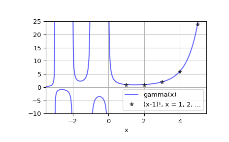

scipy.special.gamma¶
-
scipy.special.gamma(z) = <ufunc 'gamma'>¶ Gamma function.
\[\Gamma(z) = \int_0^\infty x^{z-1} e^{-x} dx = (z - 1)!\]The gamma function is often referred to as the generalized factorial since
z*gamma(z) = gamma(z+1)andgamma(n+1) = n!for natural number n.- Parameters
- zfloat or complex array_like
- Returns
- float or complex
The value(s) of gamma(z)
Examples
>>> from scipy.special import gamma, factorial
>>> gamma([0, 0.5, 1, 5]) array([ inf, 1.77245385, 1. , 24. ])
>>> z = 2.5 + 1j >>> gamma(z) (0.77476210455108352+0.70763120437959293j) >>> gamma(z+1), z*gamma(z) # Recurrence property ((1.2292740569981171+2.5438401155000685j), (1.2292740569981158+2.5438401155000658j))
>>> gamma(0.5)**2 # gamma(0.5) = sqrt(pi) 3.1415926535897927
Plot gamma(x) for real x
>>> x = np.linspace(-3.5, 5.5, 2251) >>> y = gamma(x)
>>> import matplotlib.pyplot as plt >>> plt.plot(x, y, 'b', alpha=0.6, label='gamma(x)') >>> k = np.arange(1, 7) >>> plt.plot(k, factorial(k-1), 'k*', alpha=0.6, ... label='(x-1)!, x = 1, 2, ...') >>> plt.xlim(-3.5, 5.5) >>> plt.ylim(-10, 25) >>> plt.grid() >>> plt.xlabel('x') >>> plt.legend(loc='lower right') >>> plt.show()
